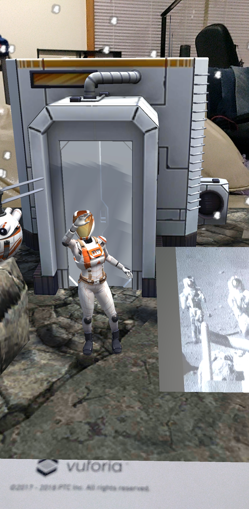
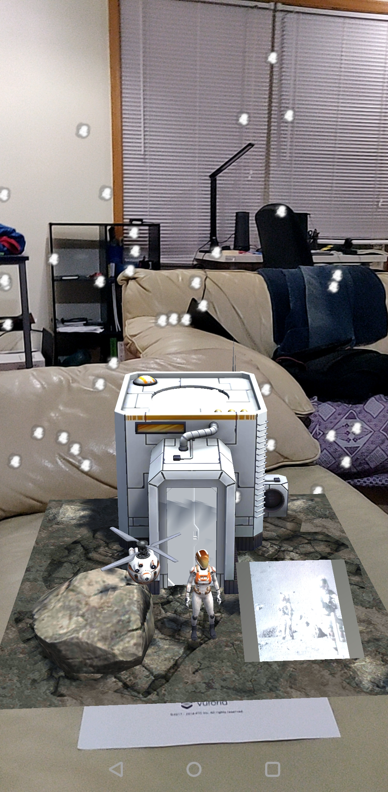

Augmented Reality is just incredible. Today's technology is improving at an exponential rate that even common people like us are able to build and use AR applications. A 2D image on the screen appearing as a 3D model in your hand, although in theory is nothing great in this day and age, does leave you astounded when you experience it for yourself and makes you wonder of what are the possibilities that can come from this.
The entire software of Unity was easy to install and use. The models, textures and animations can be easily created and added to the screen via a mere drag and drop. On top of this Vufora developers have done an amazing job developing the software. It is so seamlessly integrated into Unity. It allows for detecting an image, cuboid, cylinder or a 3D object which is pretty much anything in our perceived surroundings. Computer Vision has jumped leaps and bounds that an immediate configuration of a model using pictures of it can immediately be imported to Unity and used to classify objects in the real world. It has sample scenes that can be used to test and understand how the software works. Initially you need to add a license that Vufora provides and then you can proceed with adding images to the database that can be used to classify later (There was a little problem with the software for detecting PNG files but JPG works just fine). It also gives you the rating of the picture you posted which indicates the probability that the image can be identified correctly in the real world.
After the database is set up you can import it to Unity. An image target needs to be selected, the database should be linked and the model to be displayed upon discovery needs to be added as a child to the image target. That's it! Congratulations on developing your first real Augmented Reality application. It was a moment of joy.
Then I started wondering if anything more can be done. Sure I added animations. How would I make the scene more authentic? Some space rocks, a drone, the habitat. But still the scene seemed too static. So I went ahead and threw in a real video. All this in a matter of minutes! Ofcourse I wouldn't have been able to do it if the precompiled models and animations were not present(thank you once again vufora). I was surprised to see that the there was very minimal jitter and the models stayed exactly where they had to. It's very impressive.
This technology can be used extensively in educational field to make education interactive and fun just using a phone. But when the phone focuses off the scene it takes a while to get the models to load when the image is broght back to the focus of the camera again. This is one drawback as the image or the object the software needs to detect should always be in the scene. It would be useful to gain knowledge on the object but it wouldn't be much use if we do not have the image. Also interacting with the model is difficult with the phone in the hand. Using Google Hololens or VR in HTC Vive helps to move around freely and analyse without an anchor point.
But using this software is an amazing start for beginners to get their foot into the Augmented Reality world.
Take a look at the video below for the live demo.